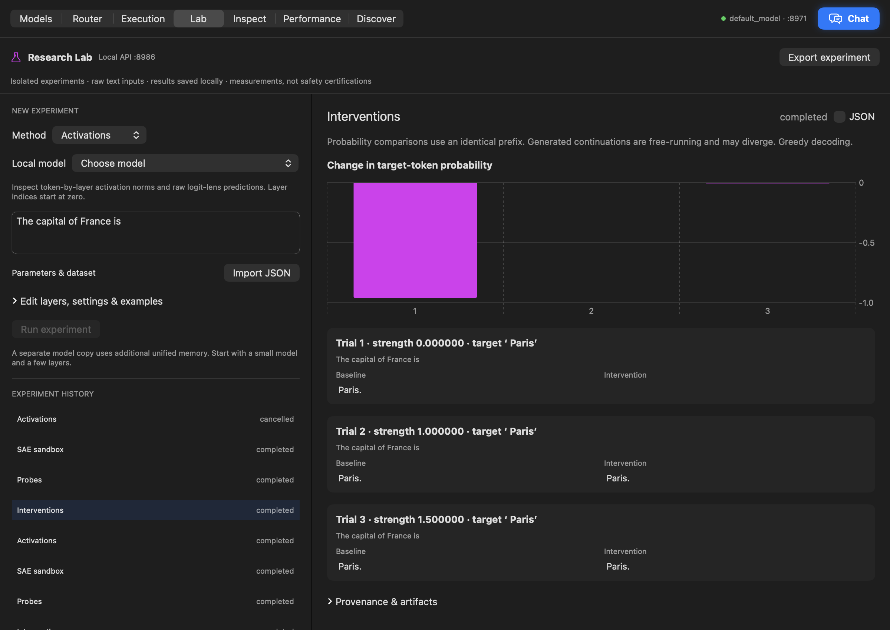
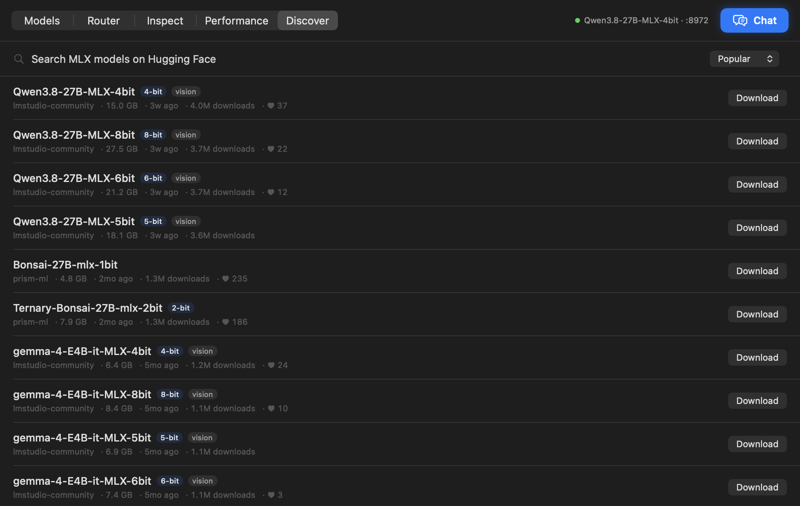
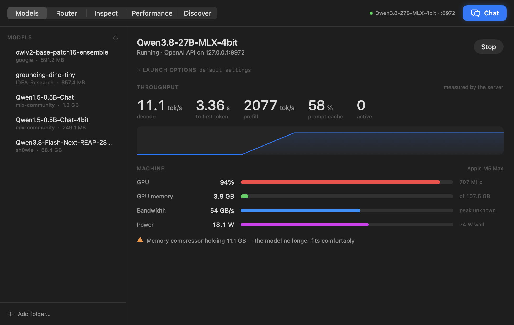
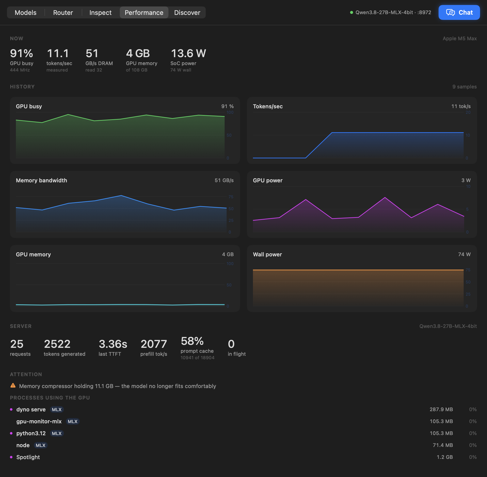

Inspect & probe
Token-by-layer activation maps, intermediate predictions, and linear probes with held-out metrics and control baselines.
ACTIVATIONS / PROBES
AI SAFETY & ALIGNMENT
Understand model behavior.
Test what changes it.
01 — THE RESEARCH WORKBENCH
Investigate how models behave. Explore activations, test hypotheses, and compare interventions in one AI safety and alignment research workbench. Local MLX inference powers the experiments; the native app, Python SDK and APIs put you in control.
RESEARCH LAB / FROM OBSERVATION TO EXPERIMENT
Capture layer activations. Train a labeled probe. Patch or steer a representation. Compare the result with an unchanged baseline. Experiments run in isolated model processes and stay on your Mac.
Token-by-layer activation maps, intermediate predictions, and linear probes with held-out metrics and control baselines.
ACTIVATIONS / PROBES
Scale, ablate, patch or steer. Compare target-token probabilities and generated answers across a strength sweep.
INTERVENTIONS / EVIDENCE
A small SAE sandbox with training curves, reconstruction metrics and activating examples. Feature meanings remain hypotheses to test.
SPARSE AUTOENCODERS

Research tools are experimental. Interpretability readouts do not certify safety or alignment. Start with a small supported model.
THE FOUNDATION / DISCOVER
Explore MLX models on Hugging Face without leaving Dyno. Compare size and precision, see what fits your Mac, and download in one click.
THE OPEN MODEL ECOSYSTEM, ON YOUR DESKTOPTHE FOUNDATION / RUN
Start a model and open Chat. Tune generation, prompt caching, and concurrency. Your OpenAI-compatible endpoint is ready for the tools you already use.
A NATIVE APP. NO TERMINAL REQUIRED.THE FOUNDATION / OBSERVE
Tokens per second. Time to first token. Prompt-cache hits. Read measurements from inside the server, alongside GPU, memory, bandwidth, and power.
MEASURED THROUGHPUT. VISIBLE HARDWARE.


Actual app captures. Measurements vary with model and workload.
02 — MAKE THE INVISIBLE VISIBLE
Decode speed measured inside the token stream, for streaming and non-streaming requests alike.
tokens / second
Time to first token and prefill throughput reveal how long the model takes to start answering.
time to first token
Watch unified memory, power, and GPU load together. Understand the machine behind the model.
GPU · memory · watts
03 — CONNECT YOUR WORLD
Your models can serve more than one screen. Turn on local network sharing and connect Windows, Linux, or another Mac to the same inference endpoint.
Start a model
Models → Start
Enable sharing
Router → Share → Start
Connect a client
Copy URL · model: auto
Sharing is off by default. Use a trusted network: devices that can reach the endpoint can submit inference without an API key. Router settings and request history remain local-only.
Connection guide & Windows / WSL examples ↗READY WHEN YOU ARE
Open your AI research lab. Inspect, probe and experiment.
Python and MLX are bundled. Add a model to get started.
Download the Apple Silicon DMG from GitHub Releases, open it, and drag Dyno to Applications. Models are downloaded separately from Discover.
The app is ad-hoc signed and not Apple-notarized. macOS may block its first launch. Read Apple’s guidance for opening an unidentified developer’s app before deciding whether to open it. Each release includes a SHA-256 checksum.
Install Xcode’s command line tools and uv, then:
git clone https://github.com/canivel/mlx-dyno
cd mlx-dyno/app
./build.sh
For a distributable disk image, run
./package-dmg.sh on Apple Silicon.
uv tool install 'mlx-dyno[serve]'
dyno serve --model mlx-community/Qwen3-8B-4bit
dyno topServe models, inspect token probabilities, benchmark, and watch hardware telemetry from your terminal.